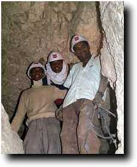

|
|
|
On this page I am trying to present updates every few days from Egypt on the status of the current season's work on the tomb of Senneferi at Luxor, Internet and other factors permitting. I have used two of the three public locations in Luxor for net access; one is the Rainbow Internet Café in the Officers' Club, just north of Chicago House and the Luxor Conference Centre, while the other is in the Osman shop a short walk from the West Bank public ferry at Geziret el-Bairat. The latter is particularly convenient for us, as we live on the West Bank. Charges vary between LE12-15 for the first 15 minutes, and LE0.75-1 per minute thereafter. Aim of this seasonTo complete the excavation of the shafts discovered in the course of the last two years in the courtyard of the tomb, and to undertake study of the major groups of finds, in particular pottery, human remains, and textiles. Work will also continue on conserving the wall paintings and objects found. This season we are being followed by a film crew from Leaderfoot Films, who are in the process of making a programme for the UK's Channel 4 in the series 'To the ends of the Earth'. The DiaryThe information is broken down into the following files. This prevents any one file from being excessively long! To 17 December, the latest entries are first, so those who haven't read this before should scroll to the end to get the full picture. From 19 December, the most recent entries are last.
These pages are being prepared in Luxor on a Macintosh G3 Powerbook, with images taken with an Olympus D-600L digital camera. Looking back on the seasonNow I'm in Cairo it's time to reflect. The scientific work of the season was incredibly successful. We have, after six seasons of work, finally finished the excavation of the tomb and its chambers. In particular, we have located the burial chamber of Senneferi, and found traces of many of the things which were buried with him. The plan of the tomb has also been made. Last year we finished the work of documenting the wall paintings, but there now remains in front of us the task of studying and interpreting the finds. The outstanding problem is going to be money, since all those institutions which have supported us so far have said that this is the last season. A copy of the summary report prepared for the SCA (no plans or photos) is on this site now. As to the Dig Diary, it was an experiment to inform readers almost live, and it worked pretty well. The computer and the digital camera performed really well in Egypt, and for the most part the Internet connections worked. However, there was the occasional time when the links did not work, or there was not the right person in the shop to make the connection. On about one in four occasions I was frustrated in this way, but I would say that it is indeed possible, and the ftp connections for transferring the files were reasonably fast; between 0.2 and 0.5k/second from Luxor to Cambridge was really not bad. As I work on a Mac and like to use long Unix filenames, uploading via a PC initially presented some problems, but I found that using zip files with the correct preferences solved those problems. I hope very much that you have found this experience interesting. All text and images © Nigel Strudwick 1998-9 |
 The Dig Diary 1998
The Dig Diary 1998© Nigel Strudwick 1997-2016